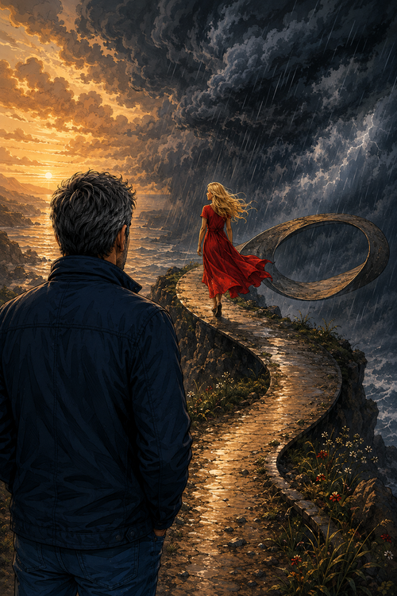

Can we really walk away?
It is a strange sensation to imagine a time with no contemplation of you, and our dangerous liaison.
We both know the score and the grief we would pour on each others loving lives and neither,
would I say has the face to scold or turn on our family blessings,
What appeared to be so appealing and pleasing by enjoying stolen kisses,
romantic notions and fiery passions which excite our being
and yet seems to lead to nothing, but maybe grief?
So my Chief tell me how to play now, it seems time is against our seedy plans
and what is more Mr. Guilt is now knocking hard on my door,
with a sinful adventure torn to pieces and there is not even any love left at the store.
I have no answers to our passionate crime
and I search my heart, mind and soul
and every time I know I cannot be without you,
and neither yet can I be with you,
a paradox enough to spin the wits and lead to a splitting mind,
But sure am I if you every grasped the moment,
I would for go all my life just so I could be with you,
As said in all this verse there is no rhyme or reason to these vagrant words,
and in fits of sadness now do I plummet
and deep and deeper down the rabbit hole do my feelings fall,
and with no Alice’s looking glass, nor special drink-me or shrink-me potions to save the tumble,
all that is going to happen is a crashing end into misery,
in what I desire to be an exquisite heaven,
and of course we’ll both be rumbled,
And while falling I recall the moment of my feelings for you,
and then do I know I had no malice or intent to harm,
most would say that the path to torment is paved with good intensions,
and what I ken is this pure feeling started in all earnest in talking with you,
A simple start for any connection,
and what is more the feelings came while unaware,
sitting at my home while drinking tea and watching modern TV,
and this warm glow began when all other areas of my life are in chaos slowly revealed
and as I remember that my moments only began to make sense with joy when I was with you,
So again I beat this conundrum and I am still at a loss of the correct,
perfect solution,
and do not have the charm or grace to persuade you to join me in our own race,
and what a pace we could set each other!
Now all bets are off on the puzzle we have wrapped ourselves in,
as we travel on our Möbius strip looking for an exit not knowing that there is no up or down
and we will go forever round and round,
to be sure never to hit the ground running!